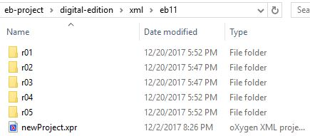
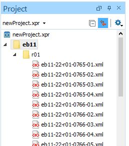
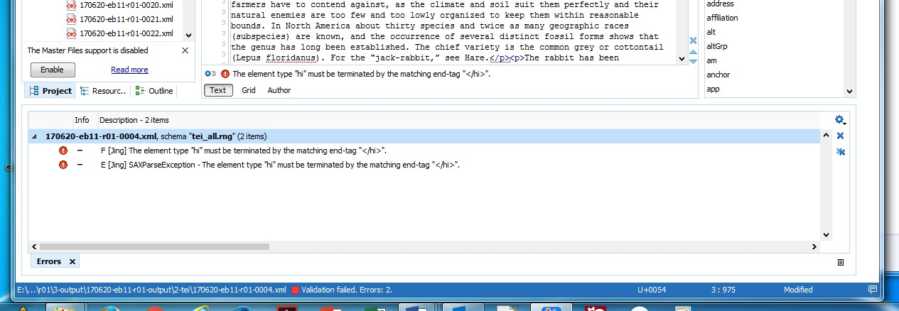

Validate Entry Files
Use Oxygen to validate the entry files.
-
In Oxygen XML Editor, navigate to the
digital-edition/xml folder for the edition and section you are working on and open an
existing XML-project file, if one exists, or create a new one
by selecting Project > New Project.
Figure 1: The xml section folder 
-
In the Oxygen
Project window, select the batch of ≤250 files.
Figure 2: The project window 
-
Right-click the selection. At the bottom of the pop-up menu, select Validate > Validate.
You should receive a Validation successful message.If some files do not validate, a red box and a Validation failed message appear in the blue bar at the bottom of the window. An Errors window opens at the bottom listing specific problems. Correct any remaining problems manually.
Figure 3: Errors window and the Validation failed message 